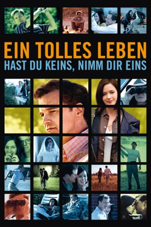
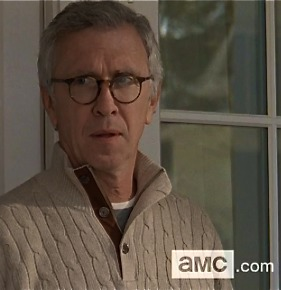
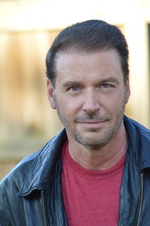

#9098 Ein Tolles Leben
Alternativ: Arthur Newman
 
 IMDB-Wertung: 5.7 / 10
IMDB-Wertung: 5.7 / 10  Metascore: 0
Metascore: 0 
Wallace Avery hat sein Leben und sich selbst satt: Seine Ex-Frau hasst ihn, sein Sohn beachtet ihn nicht und sein langweiliger Job ödet ihn komplett an. Um diesem Dasein zu entfliehen, inszeniert Wallace kurzerhand seinen eigenen Tod und kreiert sich eine perfekte neue Identität: Er nennt sich von jetzt an Arthur Newman. Kaum in diese neue Rolle geschlüpft, begegnet er der mysteriösen Mike, die genau wie er auf der Flucht ist. Gemeinsam brechen sie in leerstehende Häuser ein und leben das Leben fremder Leute, indem sie deren Kleidung tragen und deren Alltag nachahmen. Doch bald müssen beide etwas erkennen: Weglaufen kann man nicht ewig, schon gar nicht vor sich selbst. Bei dem Versuch, ihr Leben wieder in Ordnung zu bringen, kommen sich die beiden näher.
Jahr: 2012
Dauer: 101 Minuten
FSK: 12
Land: USA Studio: Cinedigm Entertainment GroupTonspuren: DTS - ,
Untertitel:
Auflösung: 1080p (1920x800) Größe: 4341 MB
Genre: Drama
Regisseur: Dante Ariola
Drehbuch: Andreas Pichler
Soundtrack: Nick Urata
Darsteller:
 Colin Firth als Arthur Newman (Wallace Avery)
Colin Firth als Arthur Newman (Wallace Avery) Emily Blunt als Mike (Charlotte Fitzgerald)
Emily Blunt als Mike (Charlotte Fitzgerald) Lucas Hedges als Kevin Avery
Lucas Hedges als Kevin Avery- Anne Heche als Mina Crawley
 M. Emmet Walsh als Zazek
M. Emmet Walsh als Zazek- Kristin Lehman als Mary Alice Wells
- Phillip Troy Linger als Fuller Wells
- Sterling Beaumon als Grant Wells
- Natalia Volkodaeva als Ludmila Hadley
 Autumn Dial als Charyl
Autumn Dial als Charyl Anthony Reynolds als Park Ranger
Anthony Reynolds als Park Ranger- Ron Prather als Detective #1
- Jason Benjamin als Cop
- Jack Landry als Doctor
- Sol Miranda als Rosita Tully
-  Steve Coulter als Owen Hadley
- Peter Jurasik als Bus Driver
- Estes Tarver als Cart Rental Man 1
- Gray Hawks als Diving Dad
 David Andrews als Chuck Willoughby
David Andrews als Chuck Willoughby Bonnie Johnson als Ticket Agent
Bonnie Johnson als Ticket Agent- James Patrick Freetly als Cart Rental Man 2
- Matthew Warzel als Motel Clerk
- L. Warren Young als Deputy
 Sharon Conley als Unemployment Official
Sharon Conley als Unemployment Official Michael Beasley als Detective #2
Michael Beasley als Detective #2- Tammy Arnold als Nurse
- Dean Chekvala als Hipster Trevor
- Nicole LaLiberte als Hipster Sarah
- Miller Carbon als Unemployment Official (uncredited)
- Don A. King als Gary (uncredited)
- Shelby Townsend als Bus Passenger (uncredited)
- Devon Woods als Janie Wells
- Holden Hansen als Dying Man - Beauregard Tully
- Daniel Jones als Hairy Man
- Brennon Olsen als Diving Kid
- Laura Anne Green als Girl
- Rachael Moser als April
- Beckett Campbell als Kevin (5 yrs)
- Jason Hatfield als Pug Man
- Michele Seidman als Lounge Singer
- James Alcorn als Featherd (uncredited)
- Ric Bagoly als Man In Unemployment Line (uncredited)
- Devon Bartholomew als Woman in unemployment parking lot (uncredited)
- Christopher Cozort als Drug Dealer (uncredited)
- Todd Davis als Officer Jackson (uncredited)
- Kimberly Dunevant als Mother with family washing car (uncredited)
- Michael Faulkner als Valet Driver (uncredited)
-  Randy Grazio als ER Doctor (uncredited)
- Lemuel Heida als Golf Cart Driver (uncredited)
Datei: X:\2012(N-Z)\Tolles Leben, Ein (2012, FSK12, 1920x800).mkv seit 19.07.2018
Festplatte: HD 2012(N-Z)-2013(A-H)
 Es gibt insgesamt 138 Filme in der Gruppe '2012(N-Z)'
Es gibt insgesamt 138 Filme in der Gruppe '2012(N-Z)'